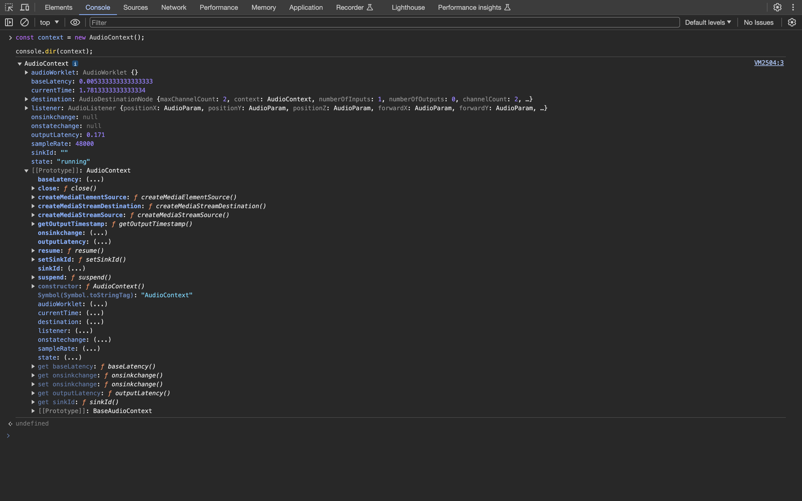
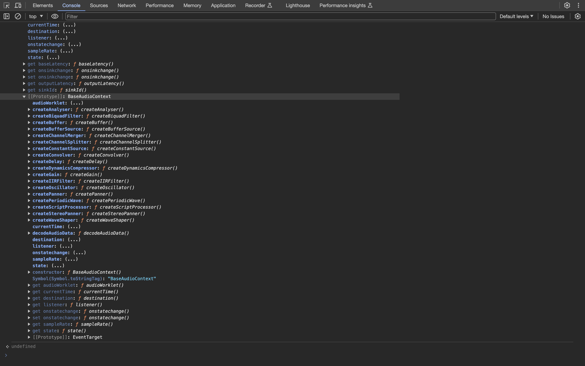

Web Music
Web Music とは, Web (ブラウザ) をプラットフォームにした音楽アプリケーション, そして, そのような Web
アプリケーションを実装するために必要となる, クライアントサイド JavaScript API (ブラウザ API) の総称です. これは, 一般的な技術用語ではなく,
技術マーケティング的な造語です.
具体的には, 以下のような, クライアントサイド JavaScript API の総称です.
本サイト制作開始時点の 2023 年時点で Web Audio API と WebRTC に関しては, W3C recommendation, HTMLMediaElement に関しては,
HTML Living Standard (2019 年 6 月以降, HTML や DOM に関わる仕様策定は W3C ではなく
WHATWG が仕様策定の主体になることが決定されたので, HTMLMediaElement は HTML
Living Standard です) となっており, モダンブラウザであれば利用することが可能です (ただし, クライアントサイド JavaScript の宿命ではありますが, OS
やブラウザによって挙動が異なることは少なからずあるので, 移植性まで考慮すると, そのためのクロスブラウザ対応の問題は必要となります).
これらのクライアントサイド JavaScript API は 2010 年代前半ごろは, HTML5 というバズワード化したカテゴリに分類される API でした. 現在は, HTML5
という仕様, あるいは, 用語が定着したからか, HTML5 というワードが使われることはほぼなくなりました. したがって, Web Music に関係する API も,
膨大なクライアントサイド JavaScript API のうちのいくつかです (という認識が一般的と言えます).
クライアントサイド JavaScript とは ?
クライアントサイド JavaScript とは, JavaScript の仕様の標準である ECMAScript (JavaScript の実行コンテキストに依存しない言語仕様. これに準拠している
JavaScript のコードであれば, Web ブラウザでも, Node.js でも, ブラウザ拡張でも使うことができます) と, 実行コンテキスト
(広義な意味でのプラットフォーム) である Web ブラウザで実行する場合にのみアクセス可能な API です (例えば, Web Music の API は Node.js
で使うことはできません. また, Web ブラウザでも Web Workers が生成したスレッドでは, メインスレッド (UI スレッド)
と実行コンテキストが異なるので使うことができません).
Web Audio API
Web Music のなかで, もっともコアな API が Web Audio API です. 言い換えると, Web
をプラットフォームとした音楽アプリケーションを制作するほとんどの場合で必要になる API ということです. なぜなら,
HTMLAudioElement はオーディオファイルを再生するための API で, 高度なオーディオ処理をすることはできず (jsfx
のようにハッキーな実装をすることでエフェクトをかけるぐらいは可能ですが, 仕様のユースケースとして想定されている使い方ではありません),
リアルタイム性やインタラクティブ性も考慮された API ではないからです (厳密には, 考慮された経緯もあって,
Audio コンストラクタが定義されています). また, Web Music として, Web MIDI API や WebRTC を使う場合, 実際のオーディオ処理は Web Audio API
が実行することになります.
Web Music の歴史
古くは, Internet Explorer が独自に
bgsound という HTML
タグを実装しており, (Internet Explorer のみではありますが) ブラウザでオーディオをファイルを再生することが可能でした (現在の
HTMLAudioElement に相当する HTML タグと言えます). そのあと, Java アプレットや ActionScript (Flash) によって, Web Audio API
で実現できているような高度なオーディオ処理が可能となりました.
しかし, これらは特定のベンダーに依存していたので, Flash や Silverlight などブラウザの拡張機能 (プラグイン) という位置づけでした. Web 2.0
(もっと言えば, Ajax) を機にブラウザでも, ネイティブアプリケーションのような Web アプリケーションが実装されてくるようになると, これまで拡張機能
(オーディオ処理だけでなく, グラフィックス, ストレージ, ローカルファイルへのアクセス, ソケットなど) に依存していたような機能をブラウザ標準で
(クライアントサイド JavaScript API で) 実現できる流れが 2010 年ごろから活発になりました (このころ, HTML5 という位置づけで仕様策定され,
モダンブラウザで実装されるようになりました).
ドキュメントプラットフォームとしての Web に, アプリケーションプラットフォームが追加されていく転換期に, Web Audio API
も仕様策定されて現在に至っています.
-
草案 (Working Draft) (2011 年 12 月 15
日に公開)
-
Web Audio API 1.0 勧告 (W3C recommendation) (2021 年 6
月 17 日に公開)
-
Web Audio API 1.1 (最新の W3C Working Draft) (2024 年 11
月 5 日に公開)
Audio Data API
厳密な歴史を記載すると, Web Audio API よりわずかに先行して Firefox で
Audio Data API というブラウザオーディオ API
が実装されていました. HTMLAudioElement の拡張という位置づけで, 出力するオーディオデータを直接演算する API がメインでした (Web Audio API
の ScriptProcessorNode に相当する API). 間もなくして, Web Audio API に統一される方針となり, Firefox も Web Audio API
のサポートを開始したので現在は削除されています.
このサイトに関して
このサイト (ドキュメント) の目的は, Web Music, その中核となる Web Audio API について解説しますが, W3C
が公開している仕様のすべてを解説するわけではありません. また, JavaScript の言語仕様の解説は, サイトの目的ではないこともご了承ください (ただし, Web
Audio API を使う上で, 必要となってくるクライアントサイド JavaScript API に関しては必要に応じて解説をします (例. File API,
Fetch API など).
このサイトは W3C が公開している仕様にとって代わるものではなく, Web Audio API の仕様の理解を補助するリファレンスサイトと位置づけてください.
デスクトップブラウザでは少なくなりましたが, モバイルブラウザでは仕様とブラウザの実装に差異があり,
仕様では定義されているのに動作しないということもあります. その場合には, 開発者ツールなどを活用して,
実装されているプロパティやメソッドを確認してみてください.
解説の JavaScript コードに関して
ECMAScript 2015 以降の仕様に準拠したコードで記載します. また, ビルドツールなどを必要としないように, TypeScript
での記述やモジュール分割などもしません (端的には, コピペすればブラウザコンソールなどで実行できるようなサンプルコード, あるいは,
コード片を記載します). 具体的には, 以下のような構文を使います.
const, let による変数宣言- Template Strings
- アロー関数
- クラス
Promise, または, async/await
Web Audio API のコードも仕様で推奨されているコードを基本的に記載します (例えば, AudioNode インスタンスを生成する場合,
コンストラクタ形式が推奨されているので, そちらを使います). ただし, 現時点であまりにも実装の乖離が大きい場合は, フォールバック的な解説として,
実装として動作するコードを記載します.
前提知識と経験
前提知識としては, ECMAScript 2015 以降の JavaScript の言語仕様を理解していることと, Web ブラウザを実行環境にした JavaScript による Web
アプリケーションを実装した経験ぐらいです. Web Audio API は, ユースケースにおいて想定されるオーディオ信号処理を抽象化しているので,
オーディオ信号処理に対する理解がなくても, それなりのアプリケーションは制作できます (アプリケーションの仕様しだいでは不要になるぐらいです). もちろん,
オーディオ信号処理の理解や Web 以外のプラットフォームでのオーディオプログラミングの経験 (特に, GUI
で必要なリアルタイム性のオーディオプログラミングの経験) があれば, それは Web Audio API を理解するうえで活きます. Web Audio API
が標準でサポートしないようなオーディオ処理を実現したいケースではむしろ必要になります.
また, 音楽理論に対する知識も不要です. Web Audio API はユースケースとして, 音楽用途に限定していないからです. したがって, このサイトでは,
アプリケーションによっては必要になるドメイン知識として位置づけます (もちろん, ユースケースとして, 音楽用途も想定されているので, Web
をプラットフォームにした音楽アプリケーションを制作する場合には必要となるケースが多いでしょう).
このサイトでは, オーディオ信号処理や音楽理論など必要に応じて解説します. Web Audio API が解説の中心ではありますが, Web Music
アプリケーションを制作するための標準ドキュメントとなることを目指すからです (オーディオ信号処理や音楽理論を深入りする場合は,
それぞれ最適なドキュメントや書籍がたくさんあるのでそちらを参考にしてください).
Web Audio API に対する懐疑的な意見
Web Audio API は, 他のプラットフォームのオーディオ API と比較すると, やや奇怪な API 設計であったり, 仕様策定されたころの JavaScript の事情と, 現代の
JavaScript の事情が様変わりしたりしたことから, 懐疑的な意見もあります (参考
WebAudioは何故あんな事になっているのか).
しかしながら, この記事でも述べられているように,
実はWebAudioはオーディオAPIのオープンスタンダードとしては唯一生き残っている存在と言える。
これはたしかで, その点において学ぶ意義はあります.
音楽アプリケーションとして Web をプラットフォームにする場合は必須となるでしょう.
Issue と Pull Requests
プロローグの最後に, このサイト (ドキュメント) はオープンソースとして
GitHub に公開しています.
このサイトのオーナーも完璧に理解しているわけではないので, 間違いもあるかと思います. その場合には, GitHub に
issue を作成したり,
Pull Requests
を送っていただいたりすると大変ありがたいです.
それでは, Web Music の未来を一緒に開拓していきましょう !
Getting Started
AudioContext
Web Audio API を使うためには, AudioContext クラスのコンストラクタを呼び出して,
AudioContext インスタンスを生成する必要があります. AudioContext インスタンスが Web Audio API
で可能なオーディオ処理の起点になるからです. AudioContext インスタンスを生成することで, Web Audio API
が定義するプロパティやメソッドにアクセス可能になるわけです.
const context = new AudioContext();
何らかの理由で, レガシーブラウザ (特に, モバイルブラウザ) もサポートしなければならない場合, ベンダープレフィックスつきの
webkitAudioContext もフォールバックとして設定しておくとよいでしょう (少なくとも, デスクトップブラウザでは不要な処理で,
これから将来においては確実に不要になる処理ではありますが).
window.AudioContext = window.AudioContext || window.webkitAudioContext;
const context = new AudioContext();
AudioContext インスタンスをコンソールにダンプしてみます.
const context = new AudioContext();
console.dir(context);
AudioContext インスタンスに様々なプロパティやメソッドが実装されていることがわかるかと思います. このドキュメントではこれらを
(すべてではありませんが) メインに解説していくことになります. また, このように実装を把握することで, 仕様と実装の乖離を調査することにも役立ちます.

Web Audio API でオーディオ処理を実装するうえで意識することはほとんどありませんが, AudioContext は BaseAudioContext を拡張
(継承) したクラスであることもわかります.

Autoplay Policy 対策
Web Audio API に限ったことではないですが, ページが開いたときに, ユーザーが意図しない音を聞かせるのはよくないという観点から (つまり, UX
上好ましくないという観点から), ブラウザでオーディオを再生する場合,
Autoplay Policy
という制限がかかります. これを解除するためには, ユーザーインタラクティブなイベント 発火後に
AudioContext インスタンスを生成するか, もしくは, AudioContext インスタンスの resume メソッドを実行して
AudioContextState を 'running' に変更する必要があります. これをしないと, オーディオを鳴らすことができません.
また, decodeAudioData など一部のメソッドが Autoplay Policy 解除まで実行されなくなります. ユーザーインタラクティブなイベントとは,
click, mousedown や touchstart などユーザーが明示的に操作することによって発火するイベントのことです.
したがって, load イベントや mousemove など, 多くのケースにおいてユーザが明示的に操作するわけではないようなイベントでは
Autoplay Policy の制限を解除することはできません.
document.addEventListener('click', () => {
const context = new AudioContext();
});
resume メソッドで解除する場合 (この場合, コンソールには警告メッセージが表示されますが, Autoplay Policy
は解除できるので無視して問題ありません).
const context = new AudioContext();
document.addEventListener('click', async () => {
await context.resume();
});
これ以降のセクションでは, 本質的なコードを表記したいので, Autoplay Policy は解除されている状態を前提とします.
AudioNode
Web Audio API におけるオーディオ処理の基本は, AudioNode クラスのインスタンス生成と AudioNode がもつ
connect メソッドで AudioNode インスタンスを接続していくことです. AudioNode クラスは,
それ自身のインスタンスを生成することはできず, AudioNode を拡張 (継承) したサブクラスのインスタンスを生成して, オーディオ処理に使います.
AudioNode はその役割を大きく 3 つに分類することができます.
- サウンドの入力点となる
AudioNode のサブクラス (OscillatorNode, AudioBufferSourceNode など)
- サウンドの出力点となる
AudioNode のサブクラス (AudioDestinationNode)
-
音響特徴量を変化させる
AudioNode のサブクラス (GainNode, DelayNode, BiquadFilterNode など)
現実世界のオーディオ機器に例えると, サウンドの入力点に相当する AudioNode のサブクラスが, マイクロフォンや楽器, 楽曲データなどに相当,
サウンドの出力点に相当する AudioNode のサブクラスが. スピーカーやイヤホンなどに相当, そして, 音響特徴量を変化させる
AudioNode のサブクラスがエフェクターやボイスチェンジャーなどが相当します.
これらの, AudioNode のサブクラスを使うためには, コンストラクタ呼び出し, または,
AudioContext インスタンスに実装されているファクトリメソッド 呼び出す必要があります (ただし, サウンドの出力点となる
AudioDestinationNode は AudioContext インスタンスの destination プロパティでインスタンスとして使えるので,
コンストラクタ呼び出しやファクトリメソッドは定義されていません).
例えば, 入力として, オシレーター (OscillatorNode) を使う場合, コンストラクタ呼び出しの実装だと以下のようになります.
const context = new AudioContext();
const oscillator = new OscillatorNode(context);
インスタンス生成時には, その AudioNode のサブクラスに定義されているパラメータ (OscillatorNode の場合,
OscillatorOptions) を指定することも可能です.
const context = new AudioContext();
const oscillator = new OscillatorNode(context, { type: 'sawtooth', frequency: 880 });
ファクトリメソッドでインスタンス生成する場合, 以下のようになります.
const context = new AudioContext();
const oscillator = context.createOscillator();
コンストラクタ呼び出しによる, AudioNode のサブクラスのインスタンス生成は, Web Audio API の初期には仕様策定されておらず,
AudioContext インスタンスに実装されているファクトリメソッド呼び出す実装のみでした. インスタンス生成時に,
パラメータを変更可能なことから, どちらかと言えば, コンストラクタ呼び出しによるインスタンス生成が推奨されているぐらいですが,
ファクトリメソッドが将来非推奨になることはなく, また, 初期の仕様には仕様策定されていなかったことから,
レガシーブラウザの場合, コンストラクタ呼び出しが実装されていない場合もあります. したがって, サポートするブラウザが多い場合は,
ファクトリメソッドを, サポートするブラウザが限定的であれば, コンストラクタ呼び出しを使うのが現実解と言えるでしょう.
connect メソッド (AudioNode の接続)
現実世界の音響機器では, 入力と出力, あるいは, 音響変化も接続することで, その機能を果たします. 例えば, エレキギターであれば,
サウンド入力を担うギターとサウンド出力を担うアンプ (厳密にはスピーカー) は, 単体ではその機能を果たしません.
シールド線などで接続することによって機能します.
このことは, Web Audio API の世界も同じです. (AudioContext インスタンスを生成して,) サウンド入力点となる
AudioNode のサブクラスのインスタンス (先ほどのコード例だと, OscillatorNode インスタンス) と, サウンド出力点となる
AudioDestinationNode インスタンスを生成しただけではその機能を果たしません. 少なくとも,
サウンド入力点と出力点を接続する処理が必要となります (さらに, Web Audio API が定義する様々なノードと接続することで, 高度なオーディオ処理を実現する
API として真価を発揮します).
Web Audio API のアーキテクチャは, 現実世界における音響機器のアーキテクチャと似ています. このことは, Web Audio API
の理解を進めていくとなんとなく実感できるようになると思います.
Web Audio APIにおいて「接続」の役割を担うのが, AudioNode がもつ connect メソッドです. 実装としては,
AudioNode サブクラスのインスタンスの, connect メソッドを呼び出します. このメソッドの第 1 引数には, 接続先となる
AudioNode のサブクラスのインスタンスを指定します.
const context = new AudioContext();
const oscillator = new OscillatorNode(context);
// OscillatorNode (Input) -> AudioDestinationNode (Output)
oscillator.connect(context.destination);
サウンドの入力点と出力点を接続し, 最小の構成を実装できました. しかし, まだ音は出せません. なぜなら,
サウンドを開始するための音源スイッチをオンにしていないからです. 現実世界の音響機器も同じです. 現実世界がそうであるように, Web Audio API
においても, 音源のスイッチをオン, オフする必要があります. そのためには, OscillatorNode クラスがもつ
start メソッド, stop メソッド を呼び出します.
const context = new AudioContext();
const oscillator = new OscillatorNode(context);
// OscillatorNode (Input) -> AudioDestinationNode (Output)
oscillator.connect(context.destination);
// Start immediately
oscillator.start(0);
// Stop after 2.5 sec
oscillator.stop(context.currentTime + 2.5);
start メソッドの引数に 0 を指定していますが, これはメソッドが呼ばれたら, 即時にサウンドを開始します.
stop メソッドの引数には, AudioContext インスタンスの currentTime プロパティに
2.5 を加算した値を指定していますが, これは, stop メソッドを実行してから, 2.5
秒後に停止することをスケジューリングしています (詳細は, のちほどのセクションで Web Audio API におけるスケジューリングとして解説しますが,
AudioContext インスタンスの currentTime は,
AudioContext インスタンスが生成されてからの経過時間を秒単位で計測した値が格納されています. より厳密には,
AudioContextState が 'running' である状態での経過秒数となります). stop メソッドの引数も
0 を指定すれば即時にサウンドを停止します. ちなみに, start メソッド, stop メソッドもデフォルト値は
0 なので, 引数を省略して呼び出した場合, 即時にサウンドを開始, 停止します.
これで, とりあえず, ブラウザ (Web) で音を鳴らすことができました !
AudioParam
サウンドの入力点と出力点を生成して, それらを接続するだけでは, 元の入力音をそのまま出力するだけなので高度なオーディオ処理はできません. むしろ, Web
Audio API において重要なのは, この入力と出力の間に, 音響変化をさせる AudioNode を接続することです. 音響変化をさせるためには,
音響変化のためのパラメータを取得・設定したり, 周期的に変化させたり (LFO) できる必要があります. Web Audio API において, その役割を担うのが
AudioParam クラスです. AudioNode が現実世界の音響機器と例えをしましたが, それに従うと,
AudioParam クラスはノブやスライダーなど音響機器のパラメータを設定するコントローラーのようなものです.
AudioParam クラスは直接インスタンス化することはありません. AudioNode のプロパティとして,
AudioNode のサブクラスのインスタンスを生成した時点でインスタンス化されているのでプロパティアクセスで参照することが可能です.
AudioParam では, 単純なパラメータの取得や設定だけでなく, そのパラメータを周期的に変化させたり (LFO), スケジューリングによって変化させる
(エンベロープジェネレーターなど) ことが可能です (ここはオーナーの経験からですが, Web Audio API で高度なオーディオ処理を実装するためには,
AudioParam を理解して音響パラメータを制御できるようになるかが非常に重要になっていると思います).
GainNode (AudioNode インタンスの生成と接続, AudioParam の取得と設定)
AudioNode と AudioParam の具体的な利用例として, このセクションでは, GainNode を利用して,
パラメータの取得・設定を実装します. GainNode はその命名のとおり, ゲイン (増幅率), つまり, 入力に対する出力の比率 (入力を
1 としたときに出力の値) を制御するための AudioNode で, Web Audio API におけるオーディオ処理で頻繁に使うことになります.
このセクションでは, 単純に, GainNode の gain プロパティ (AudioParam インスタンス) を参照して,
そのパラメータを取得・設定してみます (この実装例では, 音量の制御と考えても問題ありません).
GainNode も AudioNode のサブクラスなので, コンストラクタ呼び出し, または, ファクトリメソッドで
GainNode インスタンスを生成できます.
const context = new AudioContext();
const gain = new GainNode(context);
コンストラクタ呼び出しで生成する場合, 初期パラメータ (GainOptions 型) を指定することも可能です.
const context = new AudioContext();
const gain = new GainNode(context, { gain: 0.5 });
ファクトリメソッドで生成する場合.
const context = new AudioContext();
const gain = context.createGain();
GainNode インスタンスを生成したら, OscillatorNode と AudioDestinationNode の間に接続します.
const context = new AudioContext();
const oscillator = new OscillatorNode(context);
const gain = new GainNode(context, { gain: 0.5 });
// OscillatorNode (Input) -> GainNode (Master Volume) -> AudioDestinationNode (Output)
oscillator.connect(gain);
gain.connect(context.destination);
// Start immediately
oscillator.start(0);
// Stop after 2.5 sec
oscillator.stop(context.currentTime + 2.5);
これで実際にサウンドを発生させると, 音の大きさが小さく聴こえるはずです.
このコードだと, 初期値を変更しているだけなので, 例えば, ユーザー操作によって変更するといったことができないので,
インスタンス生成時以外でパラメータを設定したり, 取得したりする場合は, GainNode の gain プロパティを参照します. これは,
先ほども記載したように, AudioParam インスタンスです. パラメータの取得や設定をするには, その
value プロパティにアクセスします.
簡単な UI として, 以下の HTML があるとします.
<label for="range-gain">gain</label>
<input type="range" id="range-gain" value="1" min="0" max="1" step="0.05" />
<span id="print-gain-value">1</span>
この input[type="range"] のイベントリスナーで, input[type="range"] で入力された値 (JavaScript の
number 型) を gain (AudioParam インスタンス) の value プロパティに設定し, また,
その値を取得して, HTML に動的に表示します.
const context = new AudioContext();
const oscillator = new OscillatorNode(context);
const gain = new GainNode(context);
// OscillatorNode (Input) -> GainNode (Master Volume) -> AudioDestinationNode (Output)
oscillator.connect(gain);
gain.connect(context.destination);
// Start immediately
oscillator.start(0);
const spanElement = document.getElementById('print-gain-value');
document.getElementById('range-gain').addEventListener('input', (event) => {
gain.value = event.currentTarget.valueAsNumber;
spanElement.textContent = gain.value;
});
AudioParam のパラメータの取得や設定は, このように, JavaScript のオブジェクトに対するプロパティの getter や setter と同じなので,
特に違和感なく理解できるのではないでしょうか (設定に関しては,
あとのセクションで解説するパラメータのオートメーションメソッドを利用する方法もあります).
AudioNode や AudioParam の接続によって構成されるオーディオデータのルーティングを, Web Audio API の仕様では,
オーディオグラフ (Audio Graph) と用語定義しています.
このセクションでは, Web Audio API の設計の基本となる (Web Audio API のアーキテクチャを決定づけている), AudioContext,
AudioNode, AudioParam の関係性とそのパラメータの取得・設定の実装を解説しました. 以降のセクションでは, ユースケースに応じて,
これら 3 つのクラスの詳細についても解説を追加していきます.
「音」とは ?
このセクションでは, そもそも「音」とはなにか ? からスタートして, 音の特性について簡単に解説します (いわゆる,
音響学の基本のほんの一部分を解説します). 網羅的な解説はしないので, Web Audio API を理解するうえで, 最低限の解説をできるだけ簡単に解説します.
また, そのために, 厳密さは犠牲にしている解説も多くあると思います. 音のスペシャリストの方からすると, ちょっと違う ...
という部分はたくさんあるかと思いますがご了承ください (ただし, あきらかに間違った解説や誤解を招く可能性のある解説については遠慮なく Issue を作成したり,
Pull Requests を送ったりしていただければと思います).
Web Audio API について解説するセクションではないので, 音の特性 (音響学) に関して学んだことあれば,
このセクションはスキップしていただくのがよいでしょう.
音の実体
そもそも, 「音」って何なのでしょうか？ 結論としては, 音とは媒体の振動が聴覚に伝わったものと定義することができます.
「媒体」というものが抽象的でよくわからないかもしれませんが, 具体的には, 空気や水です. 日常の多くの音は空気を媒体として,
空気の振動が聴覚に伝わることで音として知覚するわけですが, 同じことは水中でも起きます. また,
普段聴いている自分の声は骨を媒体にして伝わっている音です.
音のモデリング
音をコンピュータで表現するためには, 媒体の振動を数式で表現して, その数式によって導出される数値を 2 進数で表現できる必要があります.
音の実体は媒体の振動というのを説明しましたが, この振動を表現するのに適した数学的な関数が, sin 関数です (cos 関数は sin
関数の位相の違いでしかないので本質的に同じと考えてもよいでしょう. また, tan 関数は含まれません. その理由は,
$\frac{\pi}{2}$ や $-\frac{\pi}{2}$ で
$\infty$ や
$-\infty$ になるので振動を表現するには都合が悪いからと考えてよいでしょう).
Web Audio APIでも, OscillatorNode の type プロパティがとりうる値 (OscillatorType) の 1 つとして
'sine' が定義されています.
音を扱う学問や工学では, この sin 関数が, 音の波 (音波) をモデリングしていることから, 正弦波 (sin 波) と呼ぶことが多いです.
とちらであっても, 実体は同じなのですが, このドキュメントではこれ以降, 慣習にしたがって, 正弦波 (sin 波) と記述することにします.